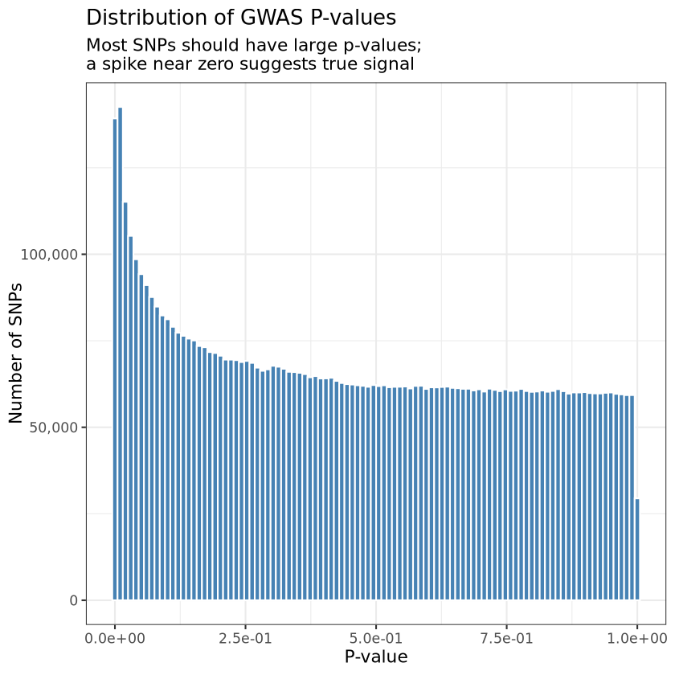
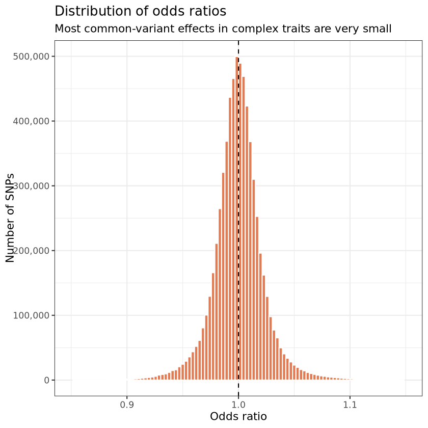
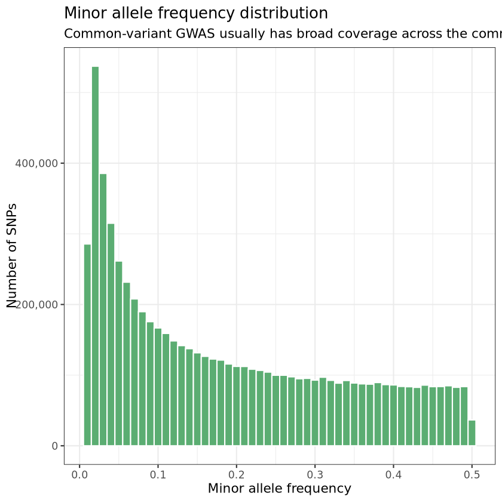
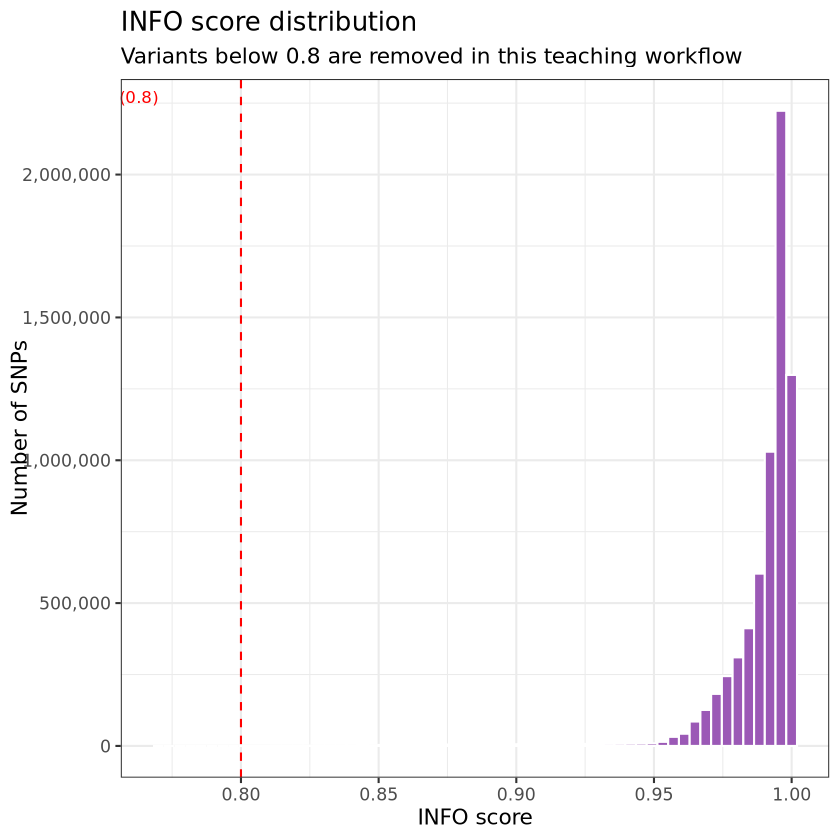

Code
pacman::p_load(vroom, dplyr, ggplot2, scales, qqman)
sumstats_path <- "input/ADHD2022_iPSYCH_deCODE_PGC.meta.gz"
figures_dir <- "output/figures"
dir.create(figures_dir, showWarnings = FALSE, recursive = TRUE)This notebook turns the original exploration script into a guided practical. You will load a large GWAS summary-statistics table, inspect its structure, apply simple quality-control filters, and generate the standard first-pass plots used in downstream interpretation.
By the end of this notebook, you should be able to: - describe the key columns in a GWAS summary-statistics file - justify basic INFO and minor-allele-frequency filtering - interpret Manhattan, QQ, and p-value distribution plots - connect SNP-level results to later gene and pathway analyses
This notebook assumes you are running from the repo/notebooks directory. The ADHD summary-statistics file should be available at input/ADHD2022_iPSYCH_deCODE_PGC.meta.gz.
Use these questions to frame the analysis before you start:
Each row represents one tested variant. The file does not contain individual-level genotype data; instead, it stores per-variant summaries such as association strength, uncertainty, allele frequency, and genomic position.
Typical columns in this dataset include: - CHR: chromosome number - SNP: variant identifier - BP: base-pair position - A1 and A2: the two alleles - FRQ_A_38691: frequency of the effect allele in cases - INFO: imputation quality - OR: odds ratio - SE: standard error of the effect estimate - P: p-value - Nca and Nco: case and control counts
Loading GWAS summary statistics...
Loaded 6,774,224 SNPs and 14 columns.| CHR | SNP | BP | A1 | A2 | FRQ_A_38691 | FRQ_U_186843 | INFO | OR | SE | P | Direction | Nca | Nco |
|---|---|---|---|---|---|---|---|---|---|---|---|---|---|
| <dbl> | <chr> | <dbl> | <chr> | <chr> | <dbl> | <dbl> | <dbl> | <dbl> | <dbl> | <dbl> | <chr> | <dbl> | <dbl> |
| 8 | rs62513865 | 101592213 | C | T | 0.925 | 0.937 | 0.981 | 0.99631 | 0.0175 | 0.8325 | +---+++0-++-+ | 38691 | 186843 |
| 8 | rs79643588 | 106973048 | G | A | 0.910 | 0.917 | 1.000 | 1.00411 | 0.0159 | 0.7967 | ++--++-+-+-++ | 38691 | 186843 |
| 8 | rs17396518 | 108690829 | T | G | 0.561 | 0.577 | 0.998 | 0.99611 | 0.0096 | 0.6876 | --++-++??-+-- | 37367 | 184388 |
| 8 | rs983166 | 108681675 | A | C | 0.570 | 0.586 | 0.996 | 0.99491 | 0.0096 | 0.5956 | --++-++++-+-- | 38691 | 186843 |
| 8 | rs28842593 | 103044620 | T | C | 0.839 | 0.836 | 0.982 | 0.98314 | 0.0135 | 0.2081 | ----++0+??--+ | 37504 | 184525 |
| 8 | rs7014597 | 104152280 | G | C | 0.824 | 0.824 | 0.997 | 0.99950 | 0.0122 | 0.9679 | +-++-+++++--- | 38691 | 186843 |
Rows: 6,774,224 Columns: 14 $ CHR <dbl> 8, 8, 8, 8, 8, 8, 8, 8, 8, 8, 8, 8, 8, 8, 8, 8, 8, 8, 8, … $ SNP <chr> "rs62513865", "rs79643588", "rs17396518", "rs983166", "rs… $ BP <dbl> 101592213, 106973048, 108690829, 108681675, 103044620, 10… $ A1 <chr> "C", "G", "T", "A", "T", "G", "T", "A", "A", "C", "G", "C… $ A2 <chr> "T", "A", "G", "C", "C", "C", "C", "C", "T", "T", "A", "T… $ FRQ_A_38691 <dbl> 0.925, 0.910, 0.561, 0.570, 0.839, 0.824, 0.841, 0.783, 0… $ FRQ_U_186843 <dbl> 0.937, 0.917, 0.577, 0.586, 0.836, 0.824, 0.833, 0.790, 0… $ INFO <dbl> 0.981, 1.000, 0.998, 0.996, 0.982, 0.997, 0.997, 1.000, 0… $ OR <dbl> 0.99631, 1.00411, 0.99611, 0.99491, 0.98314, 0.99950, 0.9… $ SE <dbl> 0.0175, 0.0159, 0.0096, 0.0096, 0.0135, 0.0122, 0.0128, 0… $ P <dbl> 0.832500, 0.796700, 0.687600, 0.595600, 0.208100, 0.96790… $ Direction <chr> "+---+++0-++-+", "++--++-+-+-++", "--++-++??-+--", "--++-… $ Nca <dbl> 38691, 38691, 37367, 38691, 37504, 38691, 38691, 38691, 3… $ Nco <dbl> 186843, 186843, 184388, 186843, 184525, 186843, 186843, 1…
A first pass should answer three questions: how many variants are present, how they are distributed across chromosomes, and what the study sample size was. These checks catch obvious file-format problems early.
Question for students: if one chromosome had dramatically fewer variants than expected, what technical or biological explanations would you consider first?
| CHR | n_SNPs |
|---|---|
| <dbl> | <int> |
| 1 | 522784 |
| 2 | 581259 |
| 3 | 494157 |
| 4 | 500139 |
| 5 | 447115 |
| 6 | 464544 |
| 7 | 396727 |
| 8 | 385938 |
| 9 | 289399 |
| 10 | 350255 |
| 11 | 337044 |
| 12 | 327978 |
| 13 | 258934 |
| 14 | 222755 |
| 15 | 190565 |
| 16 | 197087 |
| 17 | 164978 |
| 18 | 193985 |
| 19 | 127926 |
| 20 | 147600 |
| 21 | 89901 |
| 22 | 83154 |
This practical uses two simple filters: - INFO >= 0.8 to keep well-imputed variants - MAF >= 0.01 to remove very rare variants with unstable estimates
These are teaching defaults, not universal rules. The right thresholds depend on study design, imputation quality, ancestry composition, and downstream method assumptions.
Question for students: what do you lose, scientifically, when you remove low-frequency variants? What do you gain?
sumstats <- sumstats %>%
mutate(MAF = pmin(FRQ_A_38691, 1 - FRQ_A_38691))
sumstats_qc <- sumstats %>%
filter(INFO >= 0.8, MAF >= 0.01)
n_removed_info <- nrow(sumstats) - nrow(filter(sumstats, INFO >= 0.8))
n_removed_maf <- nrow(sumstats) - nrow(filter(sumstats, MAF >= 0.01))
qc_summary <- tibble(
metric = c("Total SNPs before QC", "Removed: INFO < 0.8", "Removed: MAF < 0.01", "SNPs after QC"),
value = c(nrow(sumstats), n_removed_info, n_removed_maf, nrow(sumstats_qc))
)
qc_summary| metric | value |
|---|---|
| <chr> | <int> |
| Total SNPs before QC | 6774224 |
| Removed: INFO < 0.8 | 0 |
| Removed: MAF < 0.01 | 99 |
| SNPs after QC | 6774125 |
P OR SE INFO
Min. :0.0000 Min. :0.8127 Min. :0.00800 Min. :0.8020
1st Qu.:0.1826 1st Qu.:0.9884 1st Qu.:0.01030 1st Qu.:0.9870
Median :0.4381 Median :0.9999 Median :0.01340 Median :0.9950
Mean :0.4549 Mean :1.0001 Mean :0.01776 Mean :0.9893
3rd Qu.:0.7159 3rd Qu.:1.0114 3rd Qu.:0.02180 3rd Qu.:0.9980
Max. :1.0000 Max. :1.3148 Max. :0.08480 Max. :1.0200
MAF
Min. :0.0100
1st Qu.:0.0520
Median :0.1490
Mean :0.1864
3rd Qu.:0.3050
Max. :0.5000 The genomic inflation factor \(\lambda\) compares the observed median association statistic with the value expected under the null. Values near 1 suggest little global inflation. In large highly polygenic studies, modest inflation can reflect real signal rather than poor calibration.
\[ \lambda = \frac{\mathrm{median}(\chi^2_{obs})}{\chi^2_{0.5, df=1}} \]
Question: why is a rescaled measure such as \(\lambda_{1000}\) useful when comparing studies with very different sample sizes?
| metric | value |
|---|---|
| <chr> | <dbl> |
| lambda_GC | 1.321622 |
| lambda_1000 | 1.001426 |
The conventional genome-wide threshold is 5e-8. This is a rough Bonferroni-style standard for the large number of common-variant tests performed across the genome.
Finding significant SNPs is only the start. The rest of this course pipeline moves from SNPs to genes and then from genes to tissues or pathways.
Genome-wide significant SNPs: 1428| CHR | SNP | BP | A1 | A2 | MAF | OR | SE | P | INFO |
|---|---|---|---|---|---|---|---|---|---|
| <dbl> | <chr> | <dbl> | <chr> | <chr> | <dbl> | <dbl> | <dbl> | <dbl> | <dbl> |
| 1 | rs549845 | 44076469 | G | A | 0.321 | 1.08199 | 0.0102 | 9.033e-15 | 0.999 |
| 1 | rs11210887 | 44076019 | G | A | 0.321 | 1.08188 | 0.0102 | 9.195e-15 | 0.999 |
| 5 | rs4916723 | 87854395 | A | C | 0.447 | 0.91824 | 0.0110 | 9.477e-15 | 0.957 |
| 1 | rs3001723 | 44037685 | G | A | 0.317 | 0.92422 | 0.0102 | 9.899e-15 | 1.000 |
| 5 | rs12653396 | 87847273 | T | A | 0.425 | 0.92951 | 0.0095 | 1.293e-14 | 0.993 |
| 1 | rs631248 | 44071221 | G | A | 0.239 | 1.09024 | 0.0114 | 2.781e-14 | 0.999 |
| 11 | rs2582895 | 28602173 | C | A | 0.366 | 1.07519 | 0.0096 | 4.094e-14 | 1.000 |
| 1 | rs3791138 | 44050027 | A | C | 0.232 | 1.09013 | 0.0114 | 4.162e-14 | 1.000 |
| 1 | rs2004899 | 44045465 | A | G | 0.232 | 1.08992 | 0.0114 | 4.238e-14 | 1.000 |
| 11 | rs2585817 | 28602221 | A | G | 0.366 | 1.07509 | 0.0096 | 4.349e-14 | 1.000 |
| 1 | rs3791137 | 44050004 | G | A | 0.232 | 1.08992 | 0.0114 | 4.421e-14 | 1.000 |
| 1 | rs10890261 | 44052377 | T | G | 0.232 | 1.08981 | 0.0114 | 4.550e-14 | 1.000 |
| 11 | rs4471400 | 28650096 | C | T | 0.358 | 1.07562 | 0.0097 | 4.691e-14 | 0.998 |
| 11 | rs4923546 | 28607774 | G | A | 0.366 | 1.07487 | 0.0096 | 5.019e-14 | 0.999 |
| 11 | rs7952220 | 28607245 | T | C | 0.366 | 1.07487 | 0.0096 | 5.045e-14 | 0.999 |
| 1 | rs2819340 | 44039710 | T | C | 0.231 | 1.08970 | 0.0114 | 5.257e-14 | 1.000 |
| 11 | rs4378371 | 28608730 | C | G | 0.366 | 1.07487 | 0.0096 | 5.276e-14 | 0.999 |
| 11 | rs10835360 | 28606699 | T | C | 0.366 | 1.07487 | 0.0096 | 5.320e-14 | 0.999 |
| 11 | rs11030382 | 28604477 | C | T | 0.366 | 1.07487 | 0.0096 | 5.328e-14 | 0.999 |
| 11 | rs4244537 | 28617622 | C | A | 0.366 | 1.07466 | 0.0096 | 5.657e-14 | 0.999 |
The next cells reproduce the classic exploratory plots. Save them because they are often useful later in teaching slides, lab reports, and QC summaries.
Questions for students: 1. Which plot is best for spotting broad inflation? 2. Which plot is best for locating associated regions in the genome? 3. What is the practical difference between an excess of tiny p-values caused by true biology and one caused by confounding?
p1 <- ggplot(sumstats_qc, aes(x = P)) +
geom_histogram(bins = 100, fill = "#4682B4", colour = "white") +
scale_x_continuous(labels = label_scientific()) +
scale_y_continuous(labels = label_comma()) +
labs(
title = "Distribution of GWAS P-values",
subtitle = "Most SNPs should have large p-values;\na spike near zero suggests true signal",
x = "P-value",
y = "Number of SNPs"
) +
theme_bw(base_size = 13)
ggsave(file.path(figures_dir, "1.1_pvalue_histogram.png"), p1, width = 8, height = 5, dpi = 150)
p1
png(file.path(figures_dir, "1.2_qqplot.png"), width = 700, height = 700, res = 120)
qq(sumstats_qc$P,
main = "QQ Plot - ADHD GWAS",
col = "#4682B4",
cex = 0.4,
xlim = c(0, 8),
sub = sprintf("lambda = %.3f | lambda_1000 = %.3f", lambda_gc, lambda1000))
dev.off()
cat("Saved QQ plot to output/figures/1.2_qqplot.png\n")Saved QQ plot to output/figures/1.2_qqplot.pngmanhattan_data <- sumstats_qc %>%
filter(CHR %in% 1:22) %>%
select(CHR, BP, P, SNP)
png(file.path(figures_dir, "1.3_manhattan.png"), width = 1400, height = 600, res = 120)
manhattan(
manhattan_data,
chr = "CHR",
bp = "BP",
p = "P",
snp = "SNP",
main = "Manhattan Plot - ADHD GWAS 2023",
col = c("#4682B4", "#B0C4DE"),
suggestiveline = 1e-5,
genomewideline = 5e-8,
cex = 0.3,
cex.axis = 0.8
)
dev.off()
cat("Saved Manhattan plot to output/figures/1.3_manhattan.png\n")Saved Manhattan plot to output/figures/1.3_manhattan.pngp4 <- ggplot(sumstats_qc, aes(x = OR)) +
geom_histogram(bins = 100, fill = "#E07B54", colour = "white") +
geom_vline(xintercept = 1, linetype = "dashed") +
scale_x_continuous(limits = c(0.85, 1.15)) +
scale_y_continuous(labels = label_comma()) +
labs(
title = "Distribution of odds ratios",
subtitle = "Most common-variant effects in complex traits are very small",
x = "Odds ratio",
y = "Number of SNPs"
) +
theme_bw(base_size = 13)
p5 <- ggplot(sumstats_qc, aes(x = MAF)) +
geom_histogram(bins = 50, fill = "#5BAD72", colour = "white") +
scale_y_continuous(labels = label_comma()) +
labs(
title = "Minor allele frequency distribution",
subtitle = "Common-variant GWAS usually has broad coverage across the common-frequency range",
x = "Minor allele frequency",
y = "Number of SNPs"
) +
theme_bw(base_size = 13)
p6 <- sumstats %>%
filter(INFO <= 1) %>%
ggplot(aes(x = INFO)) +
geom_histogram(bins = 60, fill = "#9B59B6", colour = "white") +
geom_vline(xintercept = 0.8, linetype = "dashed", colour = "red") +
annotate("text", x = 0.77, y = Inf, label = "QC cut-off (0.8)", vjust = 2, hjust = 1, colour = "red", size = 3.5) +
scale_y_continuous(labels = label_comma()) +
labs(
title = "INFO score distribution",
subtitle = "Variants below 0.8 are removed in this teaching workflow",
x = "INFO score",
y = "Number of SNPs"
) +
theme_bw(base_size = 13)
ggsave(file.path(figures_dir, "1.4_or_distribution.png"), p4, width = 8, height = 5, dpi = 150)
ggsave(file.path(figures_dir, "1.5_maf_distribution.png"), p5, width = 8, height = 5, dpi = 150)
ggsave(file.path(figures_dir, "1.6_info_distribution.png"), p6, width = 8, height = 5, dpi = 150)
p4
p5
p6Warning message: “Removed 1718 rows containing non-finite outside the scale range (`stat_bin()`).” Warning message: “Removed 2 rows containing missing values or values outside the scale range (`geom_bar()`).” Warning message: “Removed 1718 rows containing non-finite outside the scale range (`stat_bin()`).” Warning message: “Removed 2 rows containing missing values or values outside the scale range (`geom_bar()`).”



At this point you have an explored and lightly QC-filtered summary-statistics dataset. The next notebook converts these SNP-level results into the two MAGMA input files needed for annotation and gene analysis.
| metric | value |
|---|---|
| <chr> | <dbl> |
| Total SNPs | 6.774224e+06 |
| After QC | 6.774125e+06 |
| Cases | 3.869100e+04 |
| Controls | 1.868430e+05 |
| Genome-wide significant SNPs | 1.428000e+03 |
| lambda_GC | 1.321622e+00 |
| lambda_1000 | 1.001426e+00 |